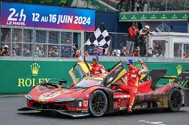

"Pídele a un niño que dibuje un auto, y seguramente lo pintará de rojo. Eso es todo lo que hay que saber de Ferrari"
Historia de la Scuderia
La Scuderia Ferrari comenzó a competir junto a pilotos de las marcas Alfa Romeo y Fiat. La compañía comenzó a producir automóviles en serie en 1947. Se convirtió en "Ferrari S.p.A." cuando en 1969 Fiat Group entró a ser parte del Consejo de Administración y se hizo accionista de la empresa. Actualmente el principal accionista es Fiat Group, con el 90%, un 5% de las acciones fue comprado en el 2005 por una compañía árabe, y el resto de las acciones pertenecen a Piero Ferrari, hijo de Enzo.
Enzo Ferrari
Fue en 1920 cuando Enzo Ferrari dió el salto a lo que podría considerarse la F1 de la época, los GP internacionales, como piloto de la marca italiana Alfa Romeo. Nueve años después, en Módena, Enzo fundaría la Scuderia Ferrari, una sociedad deportiva que se convertiría durante sus primeros años en la filial de Alfa Romeo. En los primeros años, la Scuderia entrenó a varios pilotos aficionados y compitió con éxito con autos de Alfa Romeo hasta que en 1938 fue ascendido a presidente del departamento de carreras de la marca. En 1940, tras enterarse Enzo de los planes de la compañía de absorber a su amada Scuderia, abandonó Alfa Romeo. En 1943, trasladó la marca a Maranello, donde ha permanecido desde entonces.
Il Cavallino Rampante
El famoso símbolo de Ferrari es un caballo negro rampante sobre un fondo amarillo y con los colores de la bandera de Italia en posición horizontal en la parte superior, normalmente con las letras SF de Scuderia Ferrari/San Fiorano. El diseño correcto del Cavallino se forma cuando se dibujan las cuatro puntas de las patas en línea recta, formando un ángulo de 58° con respecto a la horizontal, además de formar una vertical el casco de la pata trasera izquierda con la punta de la oreja derecha.
I Nostri Valori
Trabajo en Equipo
Nuestros talentosos trabajadores son nuestro recurso más importante, sin embargo, solo pueden ser extraordinarios cuando trabajan en equipo. Al demostrar integridad, excelencia y generosidad, le damos a cada uno de nuestros integrantes la posibilidad de explotar su potencial y ser parte de algo mucho más grande.
Tradición e Innovación
La búsqueda constante de la innovación ha sido lo que construyó la leyenda de Ferrari. Nuestra capacidad de combinar tecnologías revolucionarias con una artesanía excepcional hace que podamos crear íconos que puedan sostenerse ante los cambios del mundo.
Pasión y Logros
El espíritu corredor de la marca vive en nuestras emociones y trasciende a las calles y las pistas, lo que termina por convertirse en un estilo de vida apasionante. Nada nos emociona más que establecer metas ambiciosas -y superarlas- para empujarnos a ser cada vez mejores. Así es como el poder de la pasión se transforma en la belleza del logro.
Áreas de Negocio
El Cavallino Rampante simboliza exclusividad, rendimiento y calidad alrededor del mundo. Nuestro prestigio se basa en décadas de éxitos deportivos y en el estilo ilimitable de nuestros coches, que son únicos por su innovación, tecnologías y placer de conducción.
Hemos competido en más de 900 grandes premios y seguimos siendo el único constructor que ha participado en todos los campeonatos mundiales de Fórmula 1 desde su creación en 1950, alcanzando 15 mundiales de pilotos y 16 de constructores.
La verdadera pasión de Enzo Ferrari, a pesar de su extensa carrera con automóviles de calle, fue siempre la competición de coches. Su escudería comenzó como patrocinadora independiente para pilotos de varios coches. El equipo Ferrari apareció por primera vez en un Gran Premio Europeo tras finalizar la Segunda Guerra Mundial.
Fórmula 1
La primera participación de Ferrari en la Fórmula 1 fue en el Gran Premio de Mónaco de 1950, con el Tipo 125 F1. Ferrari es considerado uno de los cuatro grandes equipos de la historia de la categoría, junto con Williams, McLaren y Mercedes. Han contado con grandes pilotos en su historia, entre los que destacan:
- Michael Schumacher (1996-2006): 180 carreras, 5 campeonatos de pilotos, 72 victorias, 116 podios, 58 poles, 53 vueltas rápidas y 1066 puntos.
- Niki Lauda (1974-1977): 57 carreras, 2 campeonatos de pilotos, 15 victorias, 32 podios, 23 poles, 12 vueltas rápidas y 242.5 puntos.
- Alberto Ascari (1950-1954): 27 carreras, 2 campeonatos de pilotos, 13 victorias, 17 podios, 13 poles, 10 vueltas rápidas y 139 puntos.
- Sebastian Vettel (2015-2020): 118 carreras, 14 victorias, 55 podios, 12 poles, 14 vueltas rápidas y 1400 puntos.
- Fernando Alonso (2010-2014): 96 carreras, 11 victorias, 44 podios, 4 poles, 8 vueltas rápidas y 1190 puntos.
- Kimi Raikkönen (2007-2009, 2014-2018): 1 campeonato de pilotos, 10 victorias, 52 podios, 7 poles, 23 vueltas rápidas y 1080 puntos.
- Alain Prost (1990-1991): 30 carreras, 5 victorias, 14 podios, 3 vueltas rápidas y 107 puntos.
Mundial de Resistencia
Ferrari ganó sus primeras 24 horas de Le Mans en 1949 y se llevó el primer título del Campeonato Mundial de Autos Deportivos de la historia en 1953. Ferrari ha ganado 25 campeonatos de constructores de la FIA, incluyendo 6 del Campeonato Mundial de Resistencia (WEC) en 2012, 2013, 2014, 2016, 2017 y 2021.
Carreras para Clientes

El fuerte vínculo que une a Ferrari con sus clientes del mundo competitivo ha llevado al desarrollo de un programa completo de actividades específicas y a la creación de un departamento de coordinación denominado Ferrari Corse Clienti, cuya sede está en el circuito de Fiorano.
E-Sports

Ferrari compite en carreras virtuales a través de un programa completo que se ejecuta en colaboración con las principales plataformas de software del mundo de los juegos de conducción. Para competir en la serie de E-Sports de Fórmula 1 y otras importantes series de GT, la marca ha creado un equipo especial de E-Sports, la Ferrari Driver Academy.
Scuderia Ferrari
ADN Ferrari
Nacidos del espíritu de las carreras, Ferrari personifica el poder de la pasión de toda la vida y la belleza de los logros humanos ilimitados, creando íconos atemporales para un mundo cambiante.
Le Nostre Auto
SuperAutos
Ferrari F80

SF90 Stradale

SF90 Spider

296 GTB

296 GTS

12 Cilindri

12 Cilindri Spider

Purosangue

Ferrari Roma

Roma Spider

Series Especiales
SF90 XX Stradale

SF90 XX Spider

812 Competizione

812 Competizione A

Icona
Daytona SP3

Monza SP1

Monza SP2